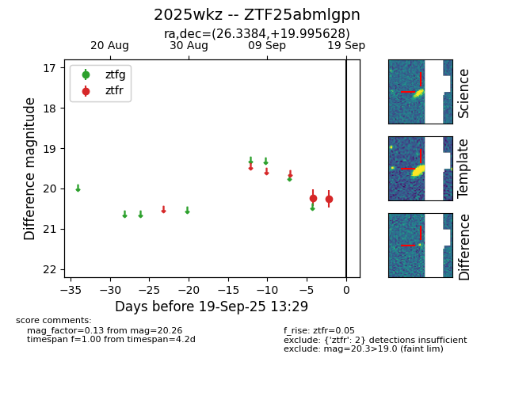

FINK: ZTF25abmlgpn
Lasair: ZTF25abmlgpn
ALeRCE: ZTF25abmlgpn
TNS: 2025wkz
YSE: 2025wkz
ZTF25abmlgpn (ztf,fink)
2025wkz (tns,yse)
equatorial (ra, dec) = (26.3384,+19.99563)
galactic (l, b) = (139.8299,-41.10031)

last ztfr=20.26
2 ztfr detections